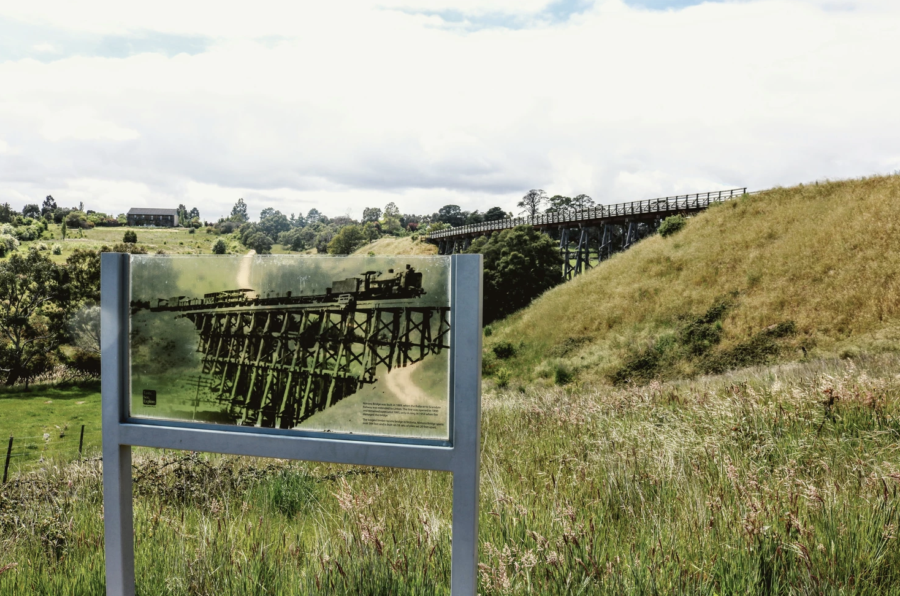

Scarsdale
Agriculture
0 Heritage Sites
744 Residents
Scarsdale township is home to 755 people in the northwest of the shire, built along the Glenelg Highway, the main route to Ballarat. Although known as an agricultural community, Scarsdale has a rich history of being a thriving gold-mining town in the late 1800s. The rural township sits along The Woady Yaloak River making the area a serene place to live. Scarsdale used to be a borough with Browns Diggings from 1862 to 1915 where Scarsdale was the main town and Browns Diggings were the mining villages.
